Being the Human in the Loop
Being the Human in the Loop
Thriving in the Age of AI-Driven Burnout
The 20th version of this talk
Since I first ran this talk
over 64,000 projects have been made
over 64,000 projects have been made
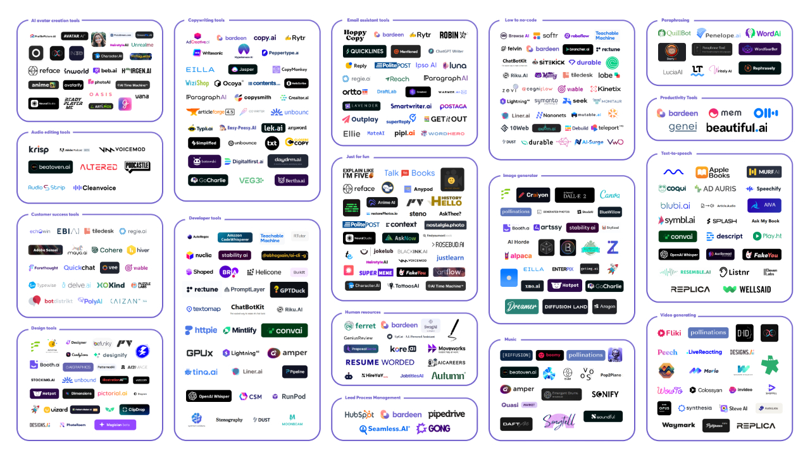
Example...

Adam Hall
Adam Hall
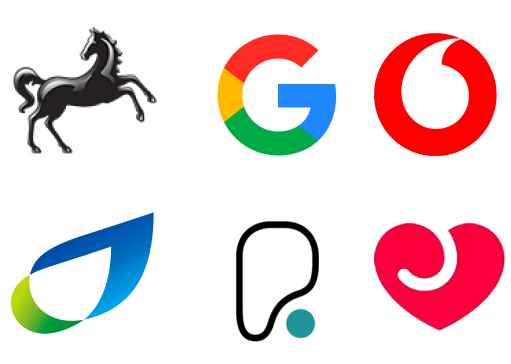
Adam Hall
Former Agile Coach
AI Principal at

Amateur AI Artist
Burnout Survivor
“Speed up the feedback loop”
Being an AI Artist
I want to share beautiful art with the world
V1 - Feb 2022

V2 - Apr 2022

V3 - July 2022

V4 - Nov 2022

V5 - Mar 2023

V5.1 - May 2023

V5.2 - June 2023

V6 - Dec 2023

V6.1 - July 2024

V7 - Apr 2025

AI Art for Business
LLM Image Classifiers
Explore with Gemini
Training your own model
Explore with Teachable Machine
Bespoke Models
Explore with Replicate
My Art Journey
2 likes
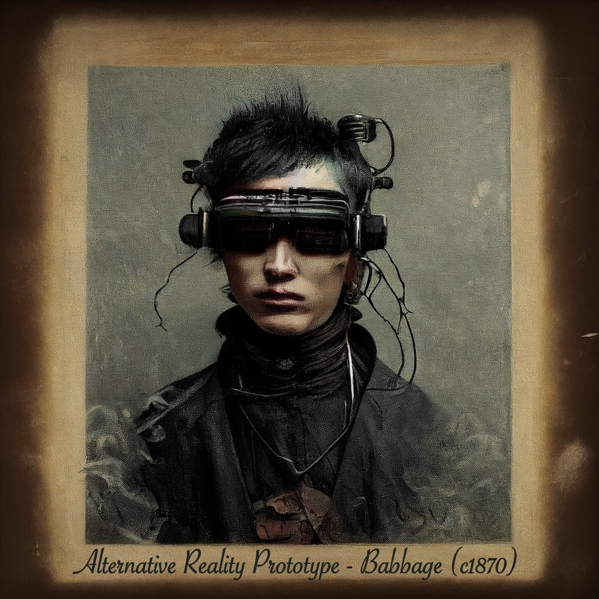
11 likes
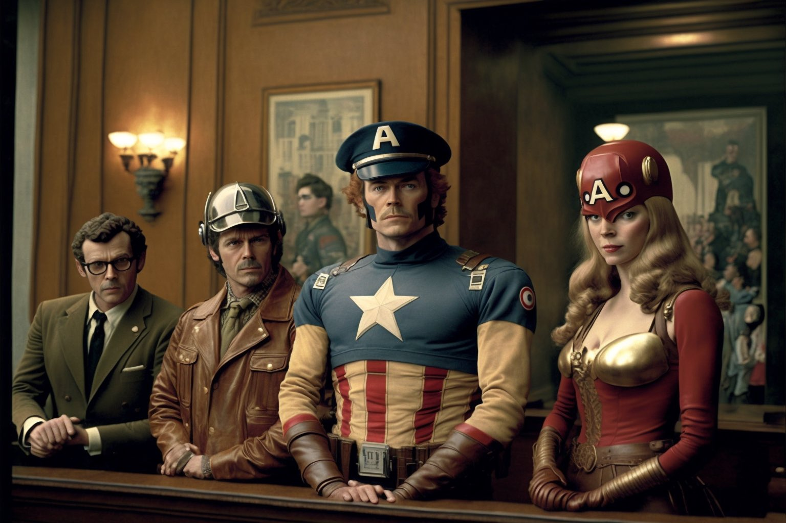
417,865 likes
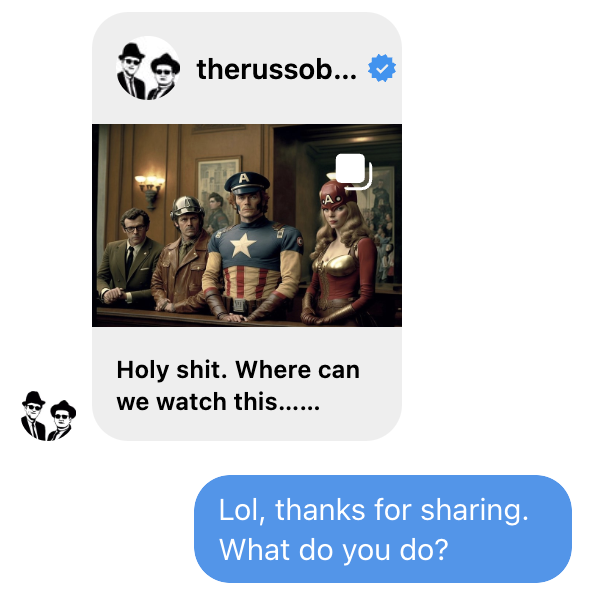
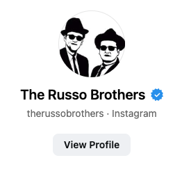
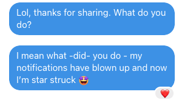
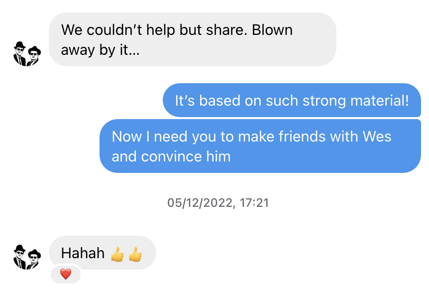
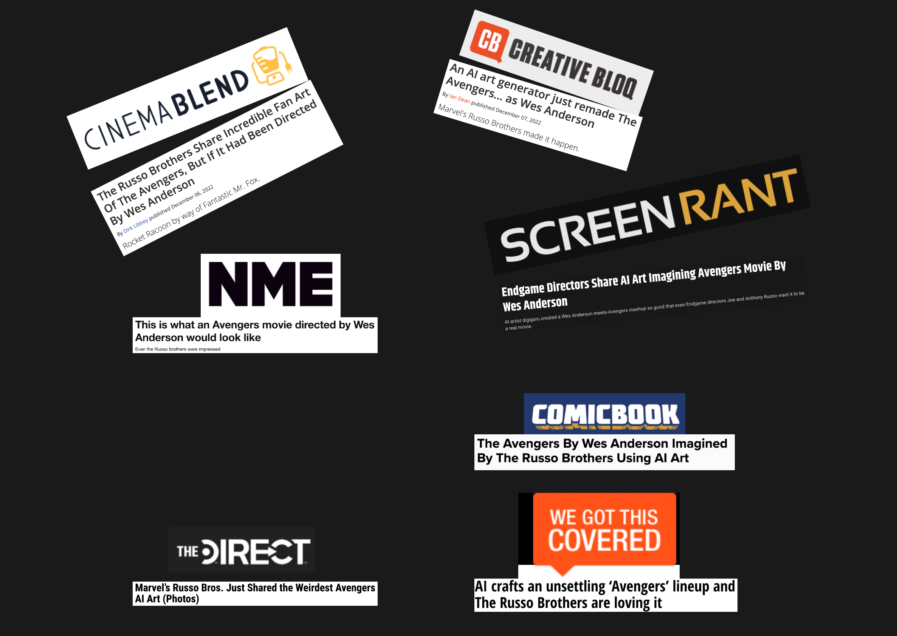
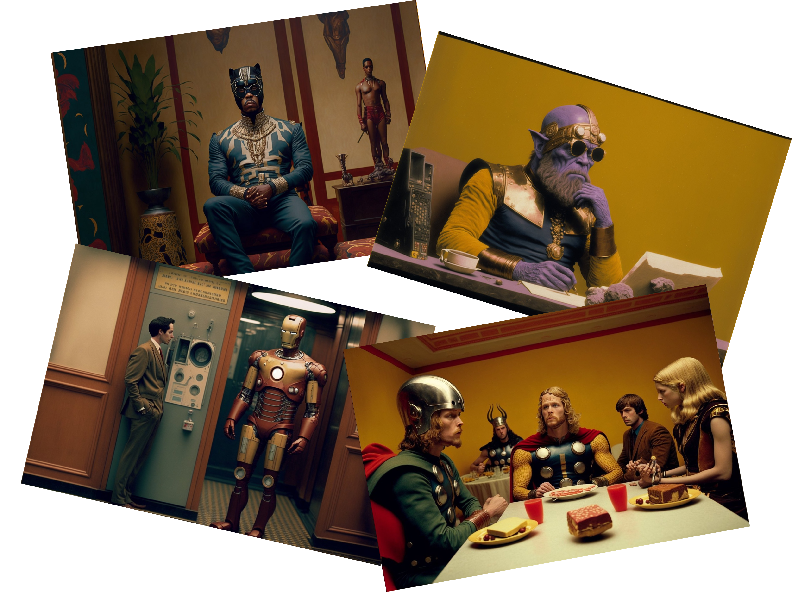
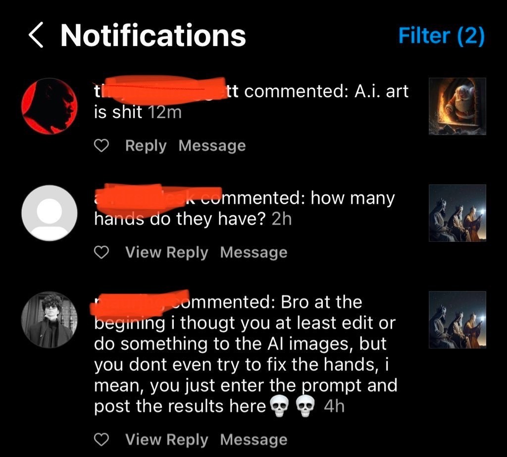
25 DECEMBER 2022
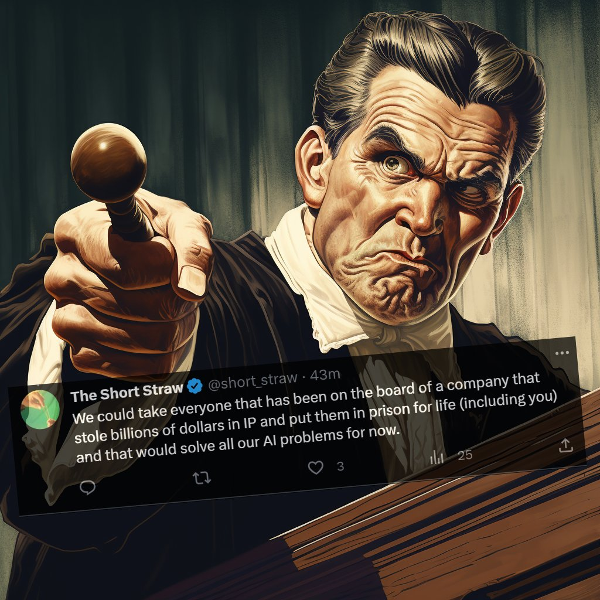
The more you succeed, the more you get resistors
Business Culture
This will be defunct in 6 months
Being Burnt

Demo
The Viral Burnout


Conclusion
How should you approach AI usage?
- Vision
- Think small
- Optimise after
- Test alternatives
- Things move fast
- Embrace the resistors
- Beware of sunk cost fallacy
- Prioritise outputs over outcomes

by mitch0zᵍᵐ
Any questions?
How does AI Art work?
Image Classifiers (2012)

Deepdream (2015)


Image GANs (2017)
Diffusion Models (2020)